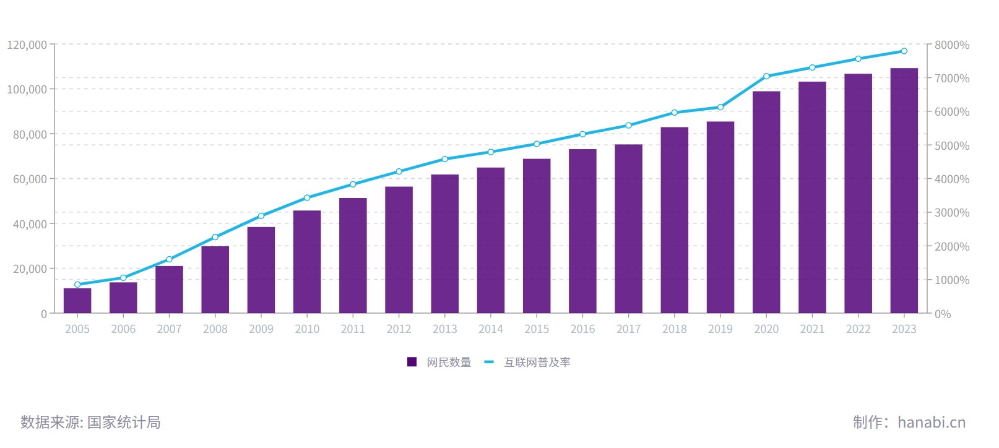
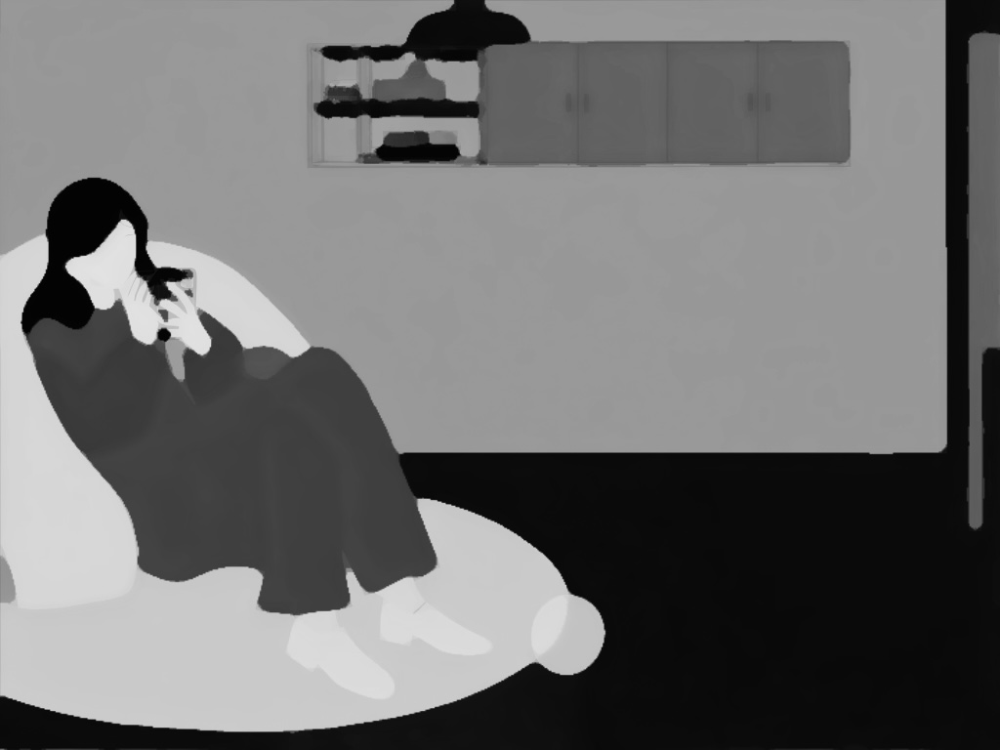
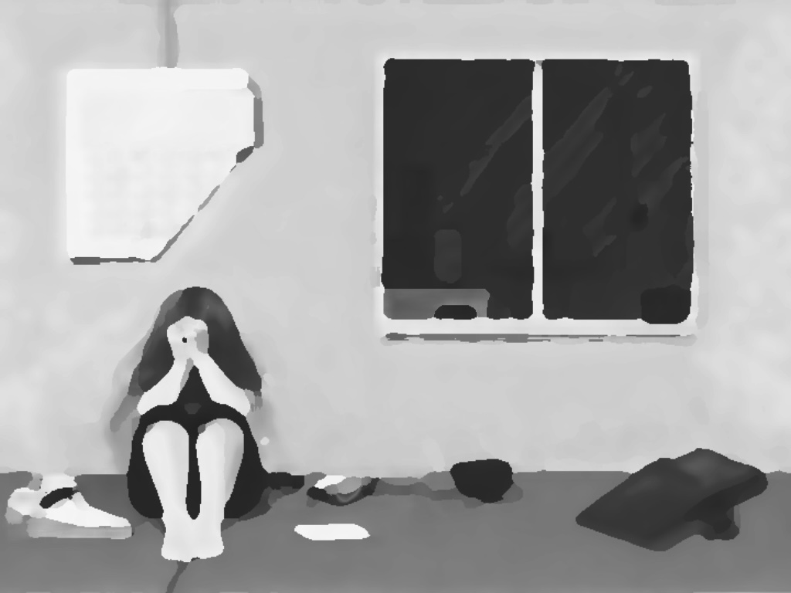
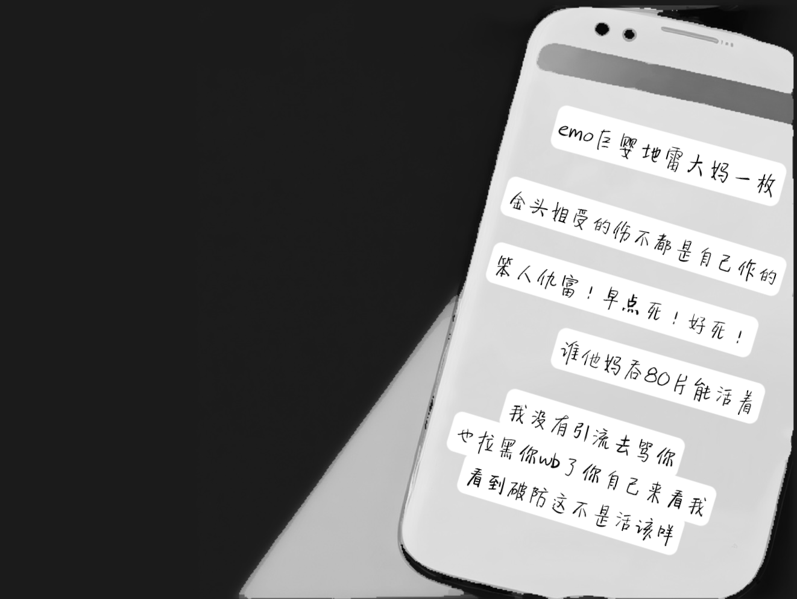
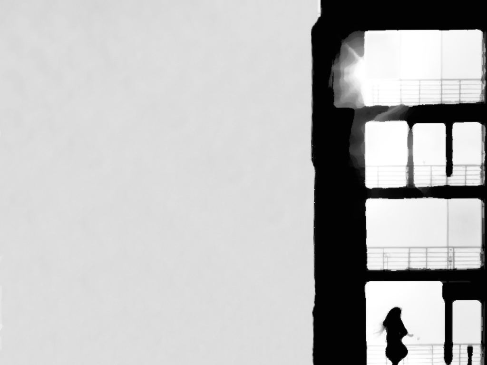
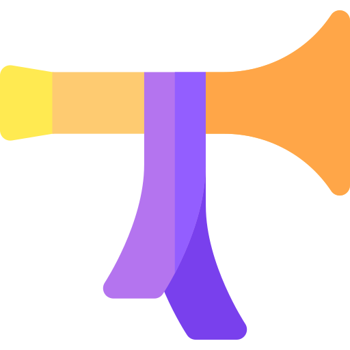
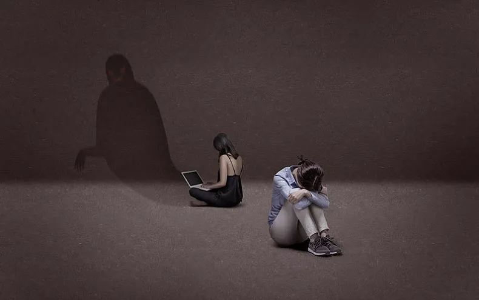
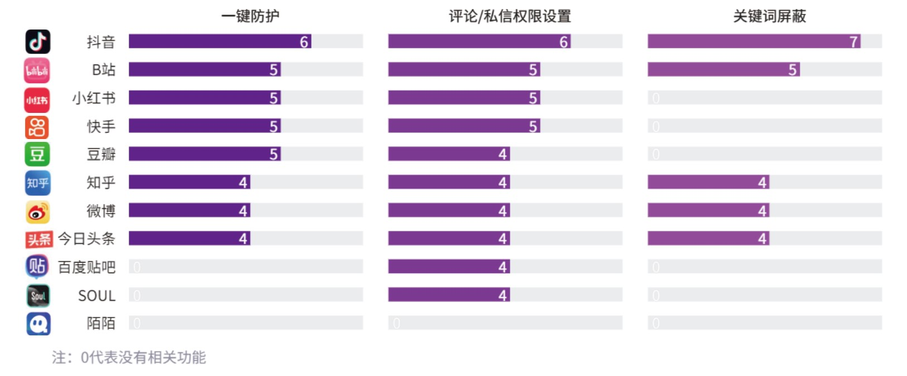
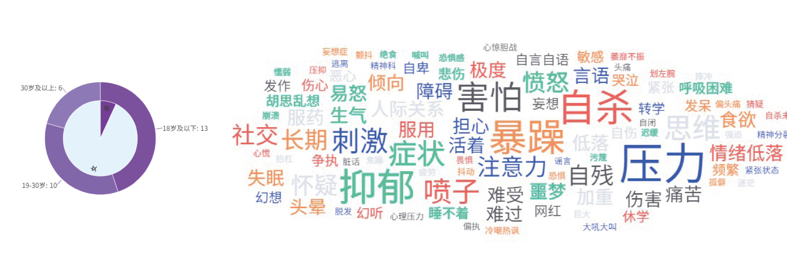

2020年开始，依奈喜欢上一款名叫“COMPASS（康帕斯）”的日本手游。游戏里，她给自己取了个id叫“拿不到金头就自杀”。“金头”是指角色专属的金色头像框，想拿到它，需要玩家在游戏某次活动中将角色积分打到全服前10，难度很大。当然，这种毒誓类似于大家平时开玩笑说的“不减20斤决不吃肉”“今年不脱单誓不为人”，纯属口嗨式自立flag的行为，怎么想也不会是真的要自杀。结果就这么一件小得不能再小的芝麻小事，为这个女孩子接下来遭受的一系列重创，拉开了序幕。
网络暴力之刃，正刺向更多人
网速让我们拥有了实时万物互联的能力
却也加剧了冲动情绪的发酵,成为网络暴力事件愈加恶劣的原因之一
图1 2005-2023年我国网民规模&互联网普及率

从我们选取的网络暴力出现至今的 40 个典型案例中可以发现，超四成被网暴对象是普通公众
而更容易受到关注的明星、网络主播与博主等公众人物，已不再是最主要的网暴受害者。
图2 近20年部分网络暴力真实事件受害者现状
人们往往无法预知到下一个遭受网络暴力的人会不会是自己。
也许在某一天
你去文具店购买文具
你在你质疑的媒体新闻上留下你的观点
你染了粉红色头发上传到你常用的社交网站中
你给外卖小哥打上了一些钱
......
你做着那些日常生活中毫不起眼也不在意的一件事
接着没有任何征兆，网络暴力降临到你的身边……
任何人都可能以任何面貌变成网络靶子
陷入漩涡中心，很多时候甚至不需要一个确切的理由。
从社交平台到厕所

2022年4月30日，作为“康帕斯”忠实玩家的依奈，通过微博账号“康帕斯隔空喊话bot”发布的二维码，误入了一个QQ群。为什么说是“误入”呢，因为当时的依奈并不知道这个“康帕斯隔空喊话bot”属于什么性质，更不会想到它的QQ群内聚集着怎样一群人。很快群里就有人发现，原来依奈就是那位在圈内非常受欢迎的“太太”“大触”，也是那个曾把游戏id设置为“拿不到金头就自杀”的玩家。带着莫名其妙的亢奋和恶意，她们开始把依奈戏称为“金头解”。“金头解”就是“金头姐”。在厕妹的语言系统里，故意用同音错别字可以表达羞辱、贬损的意味，如“小姐姐”是好感称呼而“小解解”则是恶感称呼，这里她们用“解”来嘲讽依奈。

这些刺耳的话语如同一个黑洞，把依奈卷入其中。4月30日晚上，依奈就退出了这个对她充满恶意的QQ群。但退群后她却没有躲过厕妹的中伤，因为随后立刻有人在“康帕斯隔空喊话bot”上匿名投稿，说“金头解”当初“立誓”拿不到金头就自杀，如今她没拿到金头，怎么还没有去死？“下注了又不实现，不死就是玩不起。”几个厕妹带起一波节奏，立刻有更多厕妹加入到网暴依奈的队列当中。对于社会阅历尚且不足的青少年，遇到一群鬣狗一样的同龄人，被他们集中抱团高频率爆冲，是要多坚强才能撑得住心态？

原本就有情绪问题的依奈崩溃了，她不知道怎么保护自己，更不会反击，无力地发出一条“我去死还不行吗”的微博。但这没有让厕妹们收手，反而变本加厉。事情越闹越大，7月26日，“康帕斯隔空喊话bot”发起投票，内容是“是否要解禁和金头解相关的投稿内容？”就连账号运营者发布投票都对依奈沿用了“黑称”（黑称：对某人的恶意诋毁称呼）。依奈无法想象，如果解禁了议论自己的话题，她该如何面对新一轮的匿名攻击。所以投票开始后她就赶紧去b站发布动态为自己“拉票”，希望朋友们能帮忙阻止接下来的网暴发生。

但依奈似乎已经失去了面对投票结果的勇气，她定时发布了一则“说说”：“如果你看到这一条说说，证明该号主已自杀，如果没有死，号主会在后续删除该说说。希望来世一切平安。”随后她打开了生命中最后一次直播，从自家楼顶一跃而下，手机画面永远定格在了蔚蓝的天空。
微博作为国内最大的社交媒体平台之一
近些年来用户量持续增加
用户向隔空喊话bot类账号的投稿日益缺乏价值观和底线
在一些正常网友看来，这里就好像是遍地排泄物的“厕所”。


大概在四五年之前微博上出现了很多bot账号
它是机器人的一种
最开始是用来形容推特、蓝鸟上面的那种僵尸账号。
在微博上，这些bot号它是会专注于某一类的特定话题
他们的作用就是当传声筒，不发表自己的观念，只负责传声
每类bot负责的范围都是一个特定的范围
他们通过比较精准的内容定位
快速吸引到了高度活跃和兴趣比较相同的粉丝
所以成为了一种小众兴趣群体的聚集地。
然后渐渐的这种bot账号，进化出了一种分支
叫做隔空喊话bot，也就是我们俗称的厕所
所有人都可以投稿给账号的拥有者，这种拥有者被称为皮下
皮下会把投稿按照匿名的形式发出，让投稿人达到匿名喊话的目的。
所谓“挂厕”，是指当事人的照片、行为或者是言论被网友匿名投稿至社交平台的厕所号。
名义上是听一听大家是如何评论的，而评论区实际上是充斥着各种攻击性言论，有些甚至夹杂着不堪入目的侮辱性词汇。
因为匿名投稿人大多是14、15岁尚处于青春期的小女孩，她们就被称为“厕妹”。这称呼真的很难听，但“厕妹”们完全欣然接受，毫不介意以此自居。她们好像已经习惯了一身戾气、随时摆烂，乐此不疲的继续在这些账号上口无遮拦，还创造了一套厕所黑话，使用通过缩写和变形的语言来维护小共同体的向心建构，在社交媒体上全力表达厌恶。
花名
萌萌
镇魂
qqkj&全球科技&ch
至于厌恶的对象，可能是动漫和游戏里的虚拟角色，可能是某个艺人，甚至可能是同处于一个小圈子里的同好，只要被她们“看不惯”，她们绝不会吝啬语言攻击。
当你满怀激动地将自己首次尝试cosplay的照片分享至朋友圈时，却意外发现自己成为了cos厕账号的焦点，你将不得不面对一些难以启齿的评论和情境：

当你对自己花了好久画的画特别满意，发出来和朋友们一起欣赏，却看见“画手厕”出现这样的字眼
从网暴漩涡中脱身
网暴事件频发，引发公众广泛关注。作为网暴的“起源地”和“助推器”，平台方采取了哪些举措？我们对 11 款 APP 的暴力信息拦截机制进行了测试。通过使用特定的侮辱性词汇，发现仅少数 APP 会针对施暴者发出发布消息警告。虽然大部分消息仍显示“已发送”，但超过半数的 APP 能够成功过滤掉这些有害信息，阻止其进入受害者消息列表。
自 2022 年起，响应国家政策倡导，各大互联网平台相继推出一键式网暴防护功能。该功能的入口通常位于“设置-隐私”页面，用户只需在进入 APP 后点击 4-6 次即可开启“一键防护”。开启防护后，用户将不再收到来自陌生人的消息，个人账号也无法被他人搜索到。此外，用户还可以通过设置评论权限、添加屏蔽词等方式，主动阻隔潜在的负面信息，保护自身安全。
图3 各平台开启防护功能所需的点击次数

除上述措施外，平台还具备识别具有伤害性、侮辱性语言的能力。当用户互动中出现涉嫌网暴的不友善言论时，平台可以自动拦截，并向施暴者发出警示，提醒其“评论内容可能对他人产生负面影响”。
然而，对于恶意图片和讽刺挖苦的拦截，平台的效果较差。尽管平台采取了多重防护措施，网暴现象仍未绝迹。为了探究原因，我们模拟网暴场景，测评了网络暴力事件频发的四个平台（抖音、微博、B站和小红书）。
图4 不同平台对网暴信息的拦截情况
（0代表该类型文字、图片都无法拦截；1代表只能拦截该类型文字、无法拦截图片；2代表图片文字都可拦截。）
从漩涡中脱身，对于大部分网暴受害者而言并非易事。因网络暴力而在心理困境中挣扎求生的受害者还有很多。在好大夫在线问诊平台上搜索关键词“网暴”和“网络暴力”，我们获得了 29条有效问诊记录。其中，求助问诊者里女性居多，有近一半求助者为未成年人。从网暴受害者们描述症状的词云图中，我们能够清楚地捕捉到一系列令人揪心的词汇。这些用词生动描绘了受害者们在抑郁和暴躁等负面情绪的漩涡中艰难挣扎的心境。
图5 在线问诊平台数据

结语
网络厕所的存在，并非毫无道理
在这压力山大的尘世中，人们不可避免地需要释放压力的出口
于网络间的虚拟交锋，毕竟比肆意街头的真刃相向要来得文明得多
然而，当嘲讽无度，波及旁人
当轻佻的言辞不加选择地四处飞扬
当无辜的网友被无端卷入一个不属于他们的斗争漩涡
每一次恣意的攻击，每一次无差别的挂人
就是在践踏本应和谐共生的小众生态